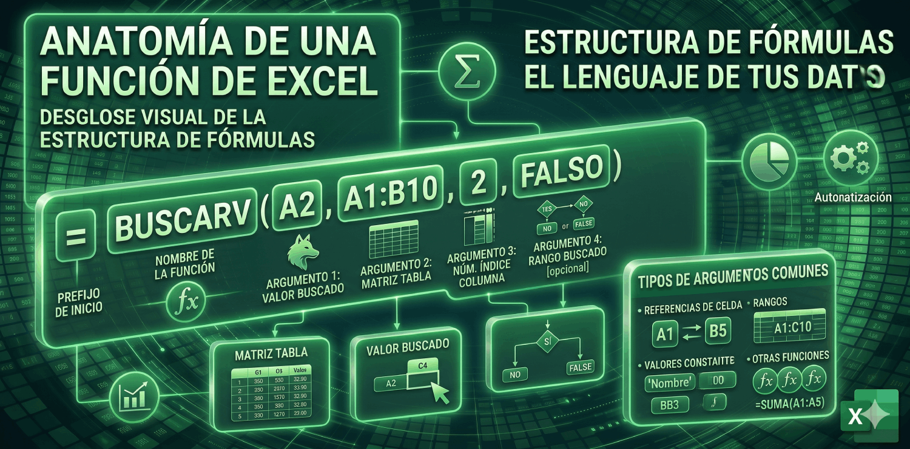

Anatomía de una Función
Entiende la estructura lógica de cualquier función para dejar de cometer errores de sintaxis.

¿Cómo se escribe una función?
Todas las funciones en Excel siguen una regla de escritura estricta llamada Sintaxis. Si falta un solo carácter, la función no funcionará.
=SUMA(A1:A10; B1)
Las Partes Fundamentales
- 1. El Signo Igual (=) Le avisa a Excel que lo que viene no es un simple texto, sino una operación que debe calcular.
- 2. Nombre de la Función Es la palabra clave que define qué hará Excel (SUMA, BUSCARV, SI, etc.). Puede escribirse en minúsculas, pero Excel lo pasará a mayúsculas automáticamente.
-
3. Paréntesis ( )
Todas las funciones, incluso las que no llevan datos dentro como
HOY(), deben llevar paréntesis. Encierran los "ingredientes" de la función. - 4. Argumentos Son los datos que la función necesita para trabajar (números, celdas, rangos, textos, fechas).
- 5. Separadores (; o ,) Sirven para separar un argumento de otro. ¡Ojo! Dependiendo de la configuración de tu computadora, usarás punto y coma (;) o coma (,).
- Luego de escribir toda la función o foórmula pulsas la tecla ENTER o INTRO para obtener el resultado.
El secreto de los corchetes [ ]
Cuando Excel te muestra la ayuda de una función, verás algunos argumentos encerrados entre corchetes, por ejemplo: =SUMA(número1; [número2]).
Esto significa que ese argumento es OPCIONAL. La función puede trabajar perfectamente sin él.